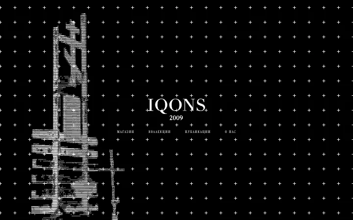
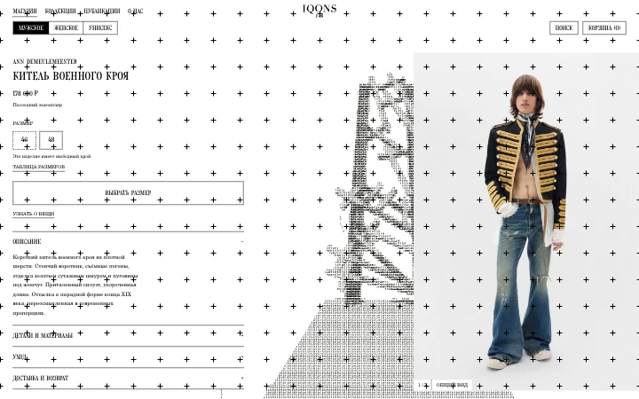
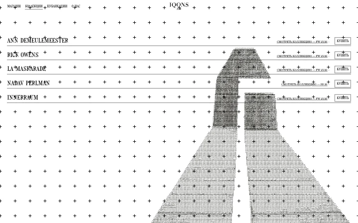

Макеты
Кликабельный прототип: каждый экран открывается по нажатию, переходы между страницами работают. Свёрстано под десктоп, 1440×900. Тексты — русские заполнители, товарные названия и цены условные.
Витрина
ГлавнаяВход на сайт: ASCII на тёмном, четыре разделаfinal1/landing.html
МагазинСетка товаров, превью слева, фильтр и поиск в рамеfinal1/shop.html
ТоварКарточка: галерея, размеры, описание, похожееfinal1/product.html
КоллекцииМарки и их лукбуки, раскрывающиеся в строкеdrafts/collections.html



Публикации и архив
Покупка
Страницы и состояния
12 экранов. Макеты, а не готовый сайт: вёрстку делает разработчик по спецификации. ASCII лежит отдельным слоем и остаётся выделяемым текстом — страницы читаются и без него.